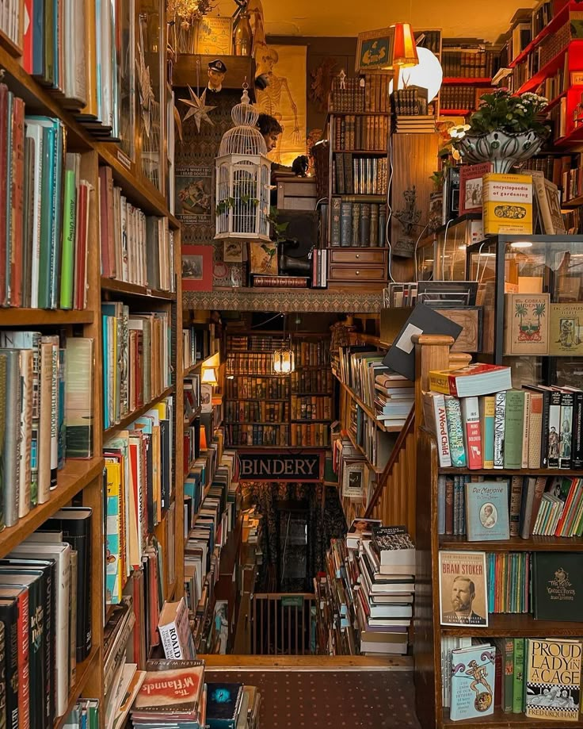

Наша история
Магазин "Переплёт" открылся в 2005 году в небольшом помещении на Литейном проспекте. Идея была простой: создать место, где книги и кофе дополняют друг друга, а посетители чувствуют себя как дома.

Наши принципы
- Каждая книга отобрана вручную.
- Кофе - только свежесваренный.
- Никакой суеты - только книги и кофе.
Наша команда
В "Переплёте" работают 8 человек: продавцы, бариста и четыре консультанта, которые читают всё, что продают.